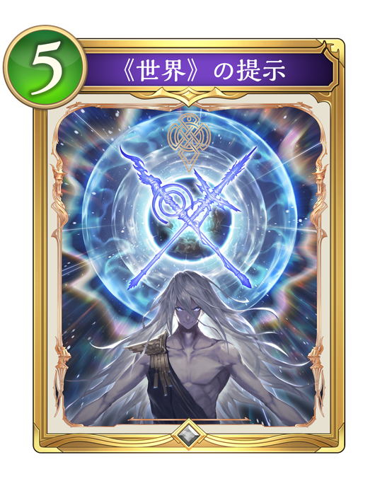
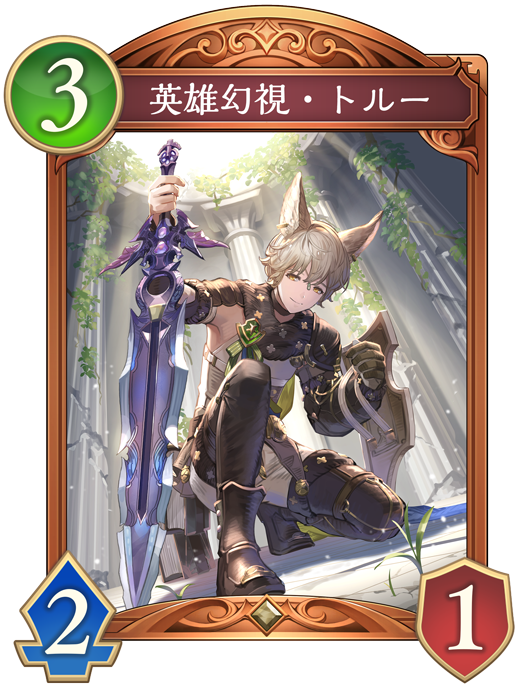

Q. 次のターンに予測できる相手の行動で危険なものは？

《世界》の提示
危険度：💀💀
2枚ドローしながら、攻撃力最大のフォロワーを破壊する。 相手のリソースが増えながらフォロワーを倒されるが、盤面的に脅威は無いため危険度はそこまでない。
 水の守護神・サレファ
水の守護神・サレファ
危険度：💀💀💀
ファンファーレで3回復して、進化時に3点を盤面全体に与えてくる。 ロイヤル対面では、展開しても倒されてしまうので体力4以上にするか、過度な展開は止めよう。
 霧巻花・クキシロ
霧巻花・クキシロ
危険度：💀💀💀💀
クレストを付与し、引いたカードが1、3、5、なら「清純なる白狐」か「ホーリーファルコン」がランダムで出てくる。 その後の盤面展開力が強く、対応できなくなる。 ファンファーレで手札2枚を戻して2枚ドローするので、クレストが2回働く。

英雄幻視・トルー
危険度：💀
疾走を持っており、アミュレットをアクトとするとドレインを持つ。 現段階では特に危険性はない。
予想の説明(クリックすると表示されるよ)
この状況では相手は先攻7ターン目で、7コストである「霧巻花・クキシロ」がプレイされる可能性が高い。
「霧巻花・クキシロ」は突進を持っており、クレストによって「ホーリーファルコン」が出ると最大3体除去ができる。
そのため、盤面を展開し、処理できないようにすることが有効である